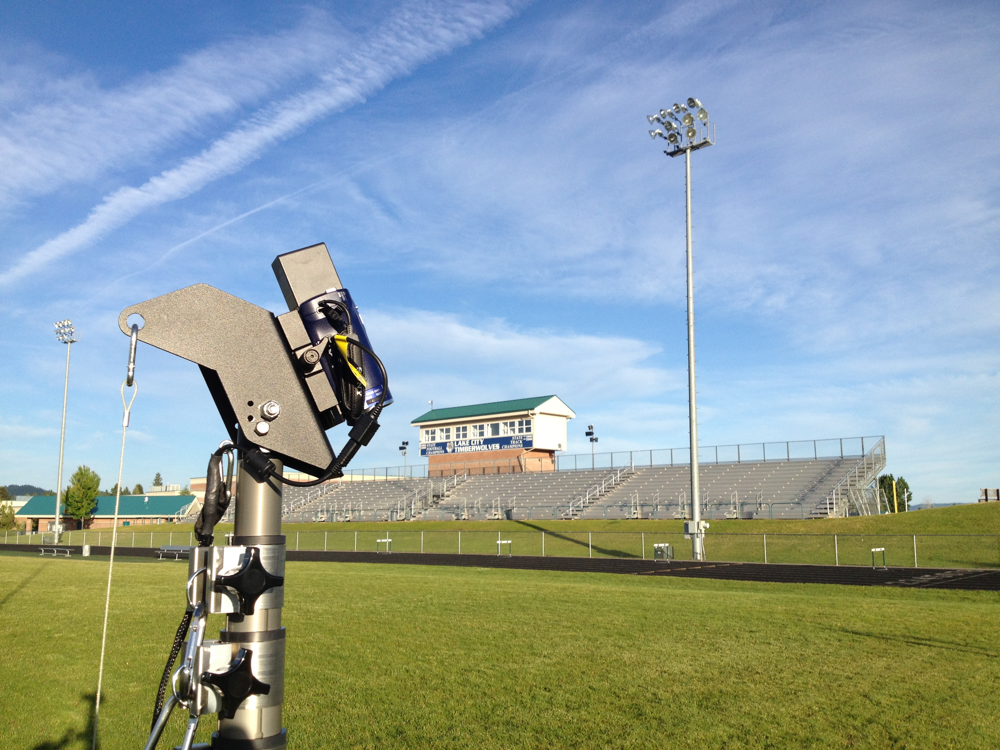

The first thing we focused on with our design was quality and cost. Our design is extremely simple, easy to fabricate, easy to build, and therefore much less expensive than the industry norm. With the extra savings from our design, we decided to include everything you would need to film and then some. This means our standard package comes with all the extended batteries, memory, cables, rain gear, etc. that is needed to film in any condition for 7-8 hrs. We also included a sports chair so the operator can sit down while they film. Sitting down during filming is possible with our system because the operator can control all the functions and movement of the camera from two remotes in the control area.
The next important part of our endzone camera system was how to control the camera's movements. We use our customized automatic pan tilt head and joystick remote to control the movement of the camera in tandem with a small Sony remote that controls the camera's functions like zoom in/out and record. The quality construction, easy set up, and smooth operation makes Sport Scope Endzone Camera the best way to get elevated film and will help your team rise above the competition.
At Sport Scope, we pride ourselves on the quality of our design and construction of our products. That is why everything we make is made in the USA. Our tower, pan tilt head, joystick remote, travel bag, and rain gear are all made by us or locally by another US-based company. The fact that our products are made in the USA, ensures that we produce high-quality products and also help our local economy. We also try to buy from as many US based manufacturers as we can to make sure our quality standards are met on all aspects of our product. Currently, we manufacture and ship our Sport Scope products from our Spokane Valley, WA in our new warehouse that we just moved into in November of 2014.
Hudl is the premier video editing software available for coaches in almost any sport. They provide an online platform for coaches to edit their software and share with their coaching staff, opposition coaches, and recruiters. Hudl's software is easy to use and cuts down the time it takes to edit film, so there is more time to learn from it.
The Sport Scope Endzone Camera system works perfectly with Hudl, just follow these three easy steps: